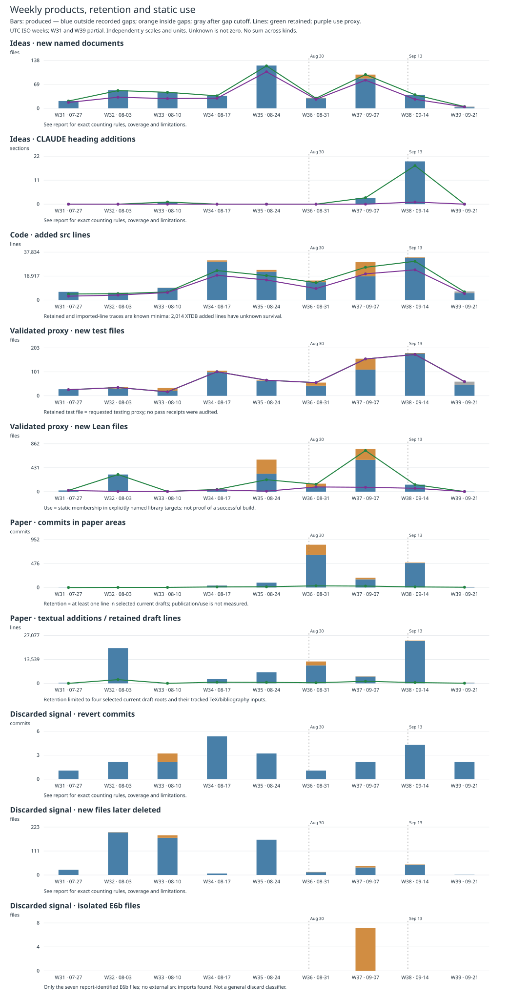

August 1–September 21, 2026; final day partial. Separate panels count named idea documents, heading additions, source lines, tests, Lean files, paper commits/text, and discard signals. Commits are deduplicated by SHA within each canonical repo, across frozen refs; nonmerge UTC committer dates determine ISO weeks. Retention uses pinned HEAD paths or exact blame; citations/imports and static build membership are use proxies, not desirability or successful validation. XTDB survival is incomplete. Orange bars fall inside recorded operator gaps; blue means outside those gaps, not proven physical presence. Gray is after the gap report cutoff.
Full report and counting rules · Weekly CSV · Pinned sources and checks · SVG · Minard figure

Never sum across kinds. No publication value or plan-usage cost is inferred.